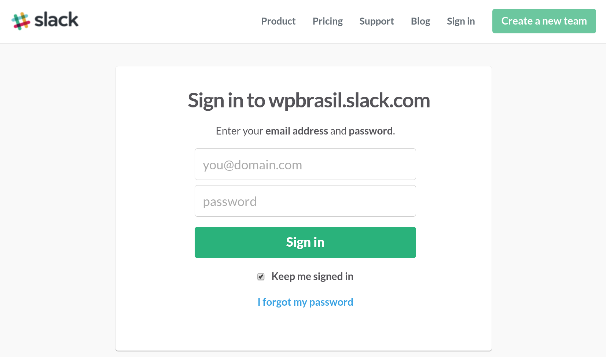

Slack
Comunicação e produtividade para times.
Created by Rodrigo Brito
Como funciona
Aplicativo de comunicação baseado em canais.
Canais
Canais podem ser utilizados para diversas categorizações dentro de uma equipe
Projetos, tópicos, times, entre outros..

Canais públicos e privados
Para uma conversação mais restrita e direcionada, o Slack permite a criação de canais privados.

Mensagens diretas e grupos de mensagens
Ideal para conversas e assuntos particulares diretos entre membros.

Vantagens de utilização*
Aumento de produtividade
Redução de e-mails
Redução de reuniões
Transparencia nas tomadas de decisões
* Pesquisa realizada com os usuários em Julho de 2015Funcionalidades

Gerenciamento de arquivos
Transferência, visualização e organização de diversos tipos de mídia.

Feeds e serviços
O Slack permite integração com diversos serviços, emitindo alertas automaticamente quando eventos são acionados.

Slackbot
Bot programável
Nosso assistente e parceiro de todas as horas
Slackbot zueiro

GIFs
E muito mais...
Mais funcionalidades e detalhes no Site Oficial.
Cadastro e instalação
Download App
O aplicativo é muitiplataforma, estando disponível para Windows, Mac, Linux (Beta) e Mobile

Também disponível como web app.
Cadastro no Slack WordPress Brasil
Leia e preencha o formulário para receber um convite.
Cadastro no WordPress.org
https://make.wordpress.org/chat/
Necessário cadastro prévio na wordpress.org
Usuário e senha
Definir um usuário através do link recebido no email.
Acesso
O acesso é feito pelo aplicativo ou endereço web.
Múltiplos Times
Os aplicativos permitem acesso simuntâneo a vários times.
Comandos e truques
O Slack proporciona um leque de funcionalidades e comandos para utilização do chat.
Menções
@userName - Notifica um usuário específico
@here - Notifica todos os usuários ativos do canal.
@channel - Notifica todos os usuários do canal.
@everyone - Notifica todos os usuários do time (Cuidado)
Formatações
*texto* = Negrito
_texto_ = Itálico
>texto = Citação
~texto~ = Riscado
Código e comandos
Comando em linha única
`echo "Hello Slack";`Bloco pré-formatado
```if(is_home()){
echo "Hello Slack";
}```
Buscas
O Slack possui uma ferramenta de busca fantástica.
Diversos filtros podem ser aplicados, como: in:channelname, from:username, from:me, before:yesterday, etc.

Pedido de suporte?
Mais informações
Using Slack: https://get.slack.help
Times Brasileiros: http://jfnj.me/slacks
Slack WP: @rodrigobrito